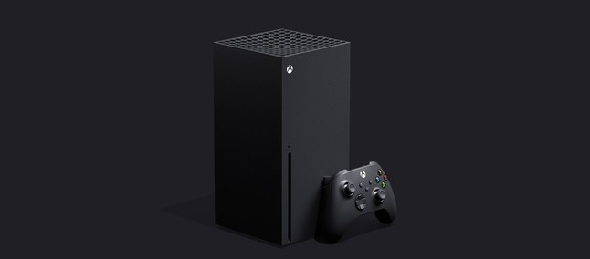
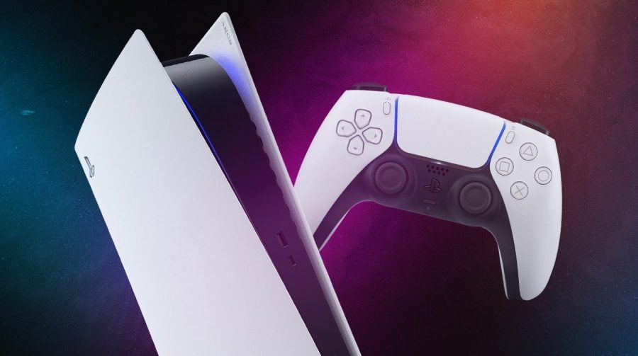
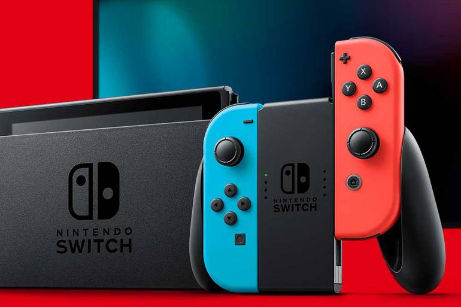

Xbox Series X

O Xbox Series X é o novo console da Microsoft com lançamento previsto para o fim de 2020, mas ainda sem preço definido para comprar. O aparelho é sucessor do Xbox One e Xbox One X, e pode ser considerado um dos videogames mais poderosos do mundo, com capacidade de reproduzir jogos em 4K a 120 FPS.
Jogue no futuro, jogue agora.
Saiba mais.
PS5

Desfrute do carregamento extremamente rápido com o SSD de altíssima velocidade, uma imersão mais profunda com suporte a feedback tátil, gatilhos adaptáveis e áudio 3D, além de uma geração inédita de jogos incríveis para PlayStation®.
O futuro em suas mãos.
Saiba mais.
Nintendo Switch

O Nintendo Switch tem a capacidade de se adequar à sua situação, permitindo assim jogar o que quiser independentemente do tempo de que disponhas. Estamos numa nova era em que já não precisas mais se ajustar no dia a dia para jogar. Agora é o seu console que se ajusta aos teus horários e necessidades.
Jogue quando, onde e como quiser.
Saiba mais.